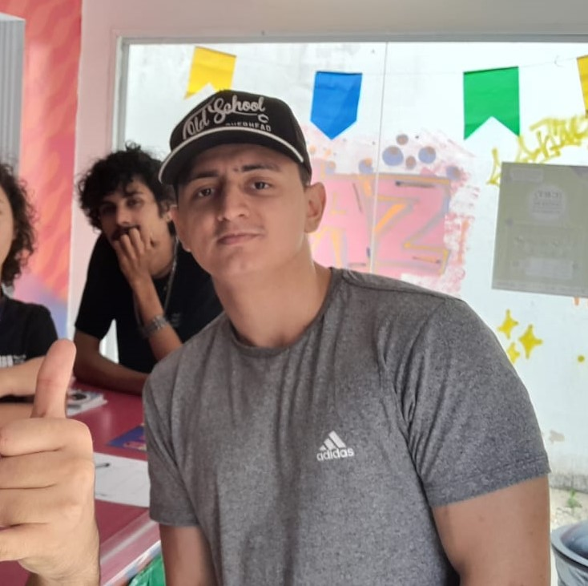

Quem sou Eu?
Meu nome é Levy, tenho 24 anos e sou Bolsista na área de tecnologia. Já fiz cursos de Desenvolvimento Web, Lógica de Programação, Data Science e Desenvolvimento de Softwares. Meu objetivo é a busca pelo constante aperfeiçoamento das minhas habilidades.
Desenvolvimento Web


Banco de Dados
Linguagens de Programação

Participação em Projetos
Projeto Bolsa Jovem 2023: tive a oportunidade de participar do desenvolvimento da automatização de um relatório de prestação de contas de um orgão fiscalizador da prefeitura de fortaleza(CGM). As tecnologias que eu juntamente com minha equipe(Amanda Sales, Brenda Tavares, David Calixto e Matheus Willamy) e o estagiário lider (Luiz Guilherme) foram Python e Excel. No final de 2023 tivemos a oportunidade de participar da premiação do Fortaleza no controle, onde fomos finalistas na Premiação.
Projeto JD na Prática
Em maio de 2024, fui um dos 25 jovens selecionados para participar do programa JD na Prática, onde passamos 3 meses estudando o tema qualidade do ar. Nos foi dado o desafio de elaborar uma página de análise de dados que trouxesse principais dados sobre a qualidade do ar em fortaleza. dentro do programa, pude aprender tecnologias como: mongoDB, node.js, express.js e apexcharts.js.
Gabriel(Mentor) em uma das reuniões do projeto JD na Prática